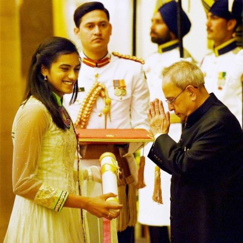

Awards And Recognition

National
Rajiv Gandhi Khel Ratna, highest sporting honour of India. (2016)
Padma Shri, the fourth highest civilian award of India. (2015)
Arjuna Award (2013)
Others
FICCI Breakthrough Sportsperson of the Year 2014
NDTV Indian of the Year 2014.
10 lakh (US$15,000) from the Badminton Association of India, for her victory in the 2015 Macau Open Badminton Championships.
5 lakh (US$7,400) from the Badminton Association of India, for her victory in the 2016 Malaysia Masters.
Rewards for winning the silver medal at the 2016 Rio Summer Olympics
5 crore (US$740,000), and a land grant from the Government of Telangana.
2 crore (US$300,000) from the Government of Delhi.
50 lakh (US$74,000) from the Government of Haryana.
50 lakh (US$74,000) from the Government of Madhya Pradesh.
50 lakh (US$74,000) from the Ministry of Youth Affairs and Sports.
50 lakh (US$74,000) from Badminton Association of India
50 lakh (US$74,000) from NRI businessman,Mukkattu Sebastian
30 lakh (US$45,000) from the Indian Olympic Association.
5 lakh (US$7,400) from All India Football Federation
BMW car from the Hyderabad District Badminton Association and as well as Indian cricketer Sachin Tendulkar
1.01 lakh (US$1,500) from Salman Khan, for qualifying as an Olympic participant.
Memento with Miniature Diamond & Gold Racket from Kirtilals
Home Page
Next
Previous